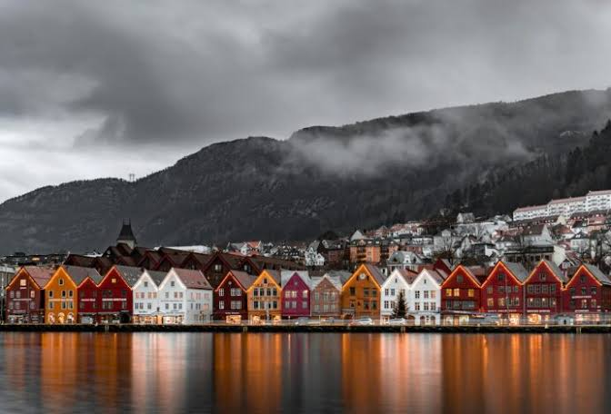

A Noruega é perfeita para quem deseja admirar paisagens dramáticas e contos de fadas. A cidade de Tromsø, localizada no Círculo Polar Ártico, é um dos melhores pontos do mundo para ver a Aurora Boreal e fazer passeios de trenó. Para uma estadia de luxo e bem-estar, o Sommarøy Arctic Hotel oferece bangalôs à beira-mar com vistas panorâmicas. Para uma opção econômica e bem localizada, o Smarthotel Tromsø conta com quartos modernos e funcionais no coração da cidade.